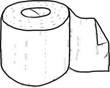

TEMATIKA 1: MATERIALET DHE PËRPUNIMI I TYRE
2.DITA DHE DIELLI NË PUNËTORI
Ndihmë: si të punoj?
Shkruaj përgjigjen tënde. Mund ta thuash edhe me zë ose t’ia tregosh dikujt që shkruan për ty. Kur të mbarosh, shtyp butonin “Dërgo”.
Emërto objektet e mëposhtme.
